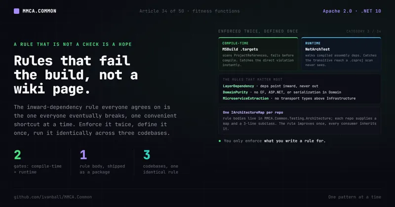

Proof & getting started · No. 34
Architecture fitness functions: rules that fail the build, not a wiki page

The inward-dependency rule everyone agrees on is the one everyone eventually breaks. Here is how MMCA.Common enforces it twice, defines the rules once, and makes them identical across four codebases.
Open almost any Clean Architecture README and you will find a diagram with arrows pointing inward, and a
sentence that says the Domain layer must not depend on EF Core or ASP.NET. Everyone nods. Everyone
agrees. And then, eighteen months later, somebody adds a [Table] attribute to a domain entity because
it was convenient, the reviewer was busy, and nothing stopped them. The arrows in the diagram were
never connected to anything that runs.
That is the difference between a convention and a fitness function. A convention is a sentence in a doc. A fitness function is a check that fails the build. MMCA.Common is built on the conviction that if a rule matters, it should be a check, not a comment, and the layer-dependency rule is enforced not once but twice, on purpose.
Why a diagram is not enforcement
The inward-dependency rule is the load-bearing wall of Clean Architecture. The whole value proposition, business logic that is independent of frameworks, UI, and data stores, collapses the moment Domain starts referencing EF Core. And it is precisely the rule that erodes quietly, one convenient shortcut at a time, because each individual violation looks harmless in the PR that introduces it.
Code review is the usual line of defense, and it is the wrong tool. Reviewers do not hold the full
dependency graph in their heads. They cannot see that a new ProjectReference three layers down now
lets Domain transitively reach a serialization library. They get tired, they trust the author, and new
contributors do not even know the rule exists. The rubric this framework is scored against
(Architecture Evaluation Criteria, category 3 Clean Architecture and category 34 Architecture
Governance) makes the point bluntly: architecture rules that exist "only as prose nobody checks" are a
red flag. The fix is to make conformance executable.
Enforced twice: compile-time and runtime
MMCA.Common enforces the dependency rules through two independent gates, and the redundancy is
deliberate (MMCA.Common/AGENTS.md, Architecture section).
1. Compile-time, via MSBuild. Source/Build/MMCA.Common.LayerEnforcement.targets is imported from
Directory.Build.props for every MMCA.Common.* project under Source/. It runs in a
BeforeTargets="ResolveProjectReferences" step, inspects the project's ProjectReference list, and
fails the build with a descriptive error if a layer references a forbidden upstream layer. This is
the fastest possible feedback: you cannot even compile a violation. The wall is checked before the code
exists.
2. Runtime, via NetArchTest. Tests/Architecture/MMCA.Common.Architecture.Tests (built on
NetArchTest.eNhancedEdition) asserts the same rules against the compiled assembly dependencies. This
catches what the project-reference check cannot: a forbidden type reach that arrives transitively
rather than through a direct ProjectReference. A dependency several packages deep can surface a type
that no .csproj names directly, so a project-reference scan never sees it, while an assembly-level
test that walks the compiled dependency graph does.
Why both? Because they fail at different times and catch different things. The MSBuild guard is instant and stops the obvious direct violation before compilation. The NetArchTest suite is comprehensive and stops the subtle transitive one. The rubric explicitly rewards this: maturity level 4 means "enforced automatically," and two complementary gates are about as enforced as a rule gets. The guidance in the contributor doc is correspondingly blunt: when you add a new layer rule, add it in both places.
One boundary is worth naming: both gates assert structure and registration, never what a booted host actually does, so the conformance suites that prove the framework's runtime contracts against a host that really started are a separate shipped tier, covered in Article 35.
Beneath both gates: a build that does not compile a warning
The layer guard and the fitness suite answer structural questions. Underneath them sits a cheaper layer that answers per-line ones on every compile, and it rests on the same conviction: a warning that does not fail the build is a comment nobody has to act on (ADR-132).
Warnings are errors. Each repo's root Directory.Build.props sets TreatWarningsAsErrors and
CodeAnalysisTreatWarningsAsErrors (MMCA.Common/Directory.Build.props:7, :13), pins AnalysisLevel
to latest with AnalysisMode All (:11-12), and turns on EnforceCodeStyleInBuild (:14), so the
IDE-only style rules run in the command-line build too. Five third-party analyzer packages, Meziantou,
Microsoft.VisualStudio.Threading, Roslynator, SonarAnalyzer and StyleCop, ride into every project except
a Docker Compose .dcproj (:130-150), with their versions pinned through Central Package Management
(MMCA.Common/Directory.Packages.props:223, :229-232). The shared .editorconfig then sets
dotnet_analyzer_diagnostic.severity = error (MMCA.Common/.editorconfig:312): every diagnostic
starts as an error, and a rule that does not apply here is turned off by name with its reason beside
it, so the exception list is something a reviewer can read rather than something implied by silence.
One baseline, shared above a marker. Everything above the # REPO-SPECIFIC DELTAS line
(MMCA.Common/.editorconfig:821, the same line in all four repos) is meant to be identical across
MMCA.Common, MMCA.Store, MMCA.ADC and MMCA.Helpdesk, as the file's own header says (:5-8); per-repo
overrides go below it. Code that moves from a consumer into the framework meets the same rules on
arrival, and a workspace script compares the four shared slices so a drifted line is an exit code
rather than something a reader has to spot in an 800-line file. An edit above the marker is therefore
a four-repo change.
An empty run is a failure. A green test step proves only that the tests which ran passed, and a
broken filter or a discovery failure can turn a suite into zero tests and still report success. So the
solution-wide unit runs carry --minimum-expected-tests: 2000 in MMCA.Common, against a suite of about
2,254 (MMCA.Common/.github/workflows/ci.yml:160-163), 5000 in MMCA.ADC
(MMCA.ADC/.github/workflows/deploy.yml:366) and 2650 in MMCA.Store
(MMCA.Store/.github/workflows/deploy.yml:338). That is the same vacuity guard the form-count floor
below applies to a single gate, applied to the whole run. The line-coverage floor that sits beside it
belongs to the test pyramid and is covered in Article 35
(The test pyramid, not the ice-cream cone: 2,254 fast tests, zero Docker).
The honest cost is suppression pressure: at error severity, suppressing a rule is the fastest way to
green, and in a diff it looks exactly like a deliberate relaxation. Nothing in this layer stops that;
review of .editorconfig and NoWarn changes does.
Defined once, identical everywhere
Here is the part that makes the fitness functions scale across more than one repo without rotting into three slightly-different copies.
The rule bodies do not live in the test project. They live once, in a shipped NuGet package:
MMCA.Common.Testing.Architecture (package 18 of the twenty-two the framework publishes, with
FACTS.md the canonical count). That
package defines:
ArchitectureRules, the reusable rule library that expresses the actual assertions.- A set of 61 abstract
*TestsBaseclasses holding 153 test methods (for exampleLayerDependencyTestsBase,DomainPurityTestsBase,MicroserviceExtractionTestsBase,PiiConventionTestsBase,FolderWidthTestsBase,DataResidencyTestsBase,RawSqlConventionTestsBase,ClockReadTestsBase). - One extension point,
IArchitectureMap, that most base classes are parameterized by, with a shippedArchitectureMapBasethat implements it so a per-repo map is a flat declaration of assemblies. The bases whose rule reads files rather than assemblies take only what that rule reads instead:FolderWidthTestsBasea repo root,ProtoContractTestsBasea solution file and a list of.protopaths.
Each repo supplies one primary map implementation that declares its own layer and module
assemblies, and its arch-test classes shrink to thin sealed subclasses (three to ten lines) that
inherit the real [Fact]s. MMCA.Common adds a second, FrameworkModuleArchitectureMap, for one
reason: its primary map declares its own Shared, Domain and Application assemblies as framework layers,
where the module-scoped DDD rules (sealed entities, no public setters, immutable DTOs and events) would
match nothing, so the second map registers them as one module and ImmutabilityTests and
EntityConventionTests run those rules over the aggregates the framework actually ships.
// In MMCA.Common: one anchor type per package, then the test class is a 3-line subclass.
internal sealed class CommonArchitectureMap : ArchitectureMapBase { /* layer + module assemblies */ }
public sealed class LayerDependencyTests : LayerDependencyTestsBase
{
protected override IArchitectureMap Map { get; } = new CommonArchitectureMap();
// The [Fact]s live in the base. This subclass just supplies the map.
}MMCA.Store and MMCA.ADC consume the same package, MMCA.Helpdesk builds the same project from
Common's source by default (its committed local.props swaps the package for a project reference),
and each supplies its own map
(StoreArchitectureMap, AdcArchitectureMap, HelpdeskArchitectureMap), so the reference app is held
to the framework's own layering, module-isolation and transport-at-edges rules rather than exempted
from them. The consequence is that the same compiled rule runs identically across all four
codebases. "Domain must not depend on Application" is one rule body, not four drifting copies. When
the rule improves, every consumer inherits the improvement on the next package bump (MMCA.Helpdesk, in
its default source mode, on its next build). One shared package
also means no per-repo ArchitectureTestHelper duplication, and so none of the drift that four copies
of a rule invite: exactly the kind of drift fitness functions are
supposed to prevent. It is also a maintainability win
in its own right (rubric category 34, which absorbs the former maintainability criteria): one rule
evolves, all consumers inherit the fix.
A small honest detail: a few checks genuinely do not generalize, so they stay local. The
MMCA.Common.Grpc boundary check and the IMessageBus / IJwksProvider placement checks live in
FrameworkSanityTests in the Common repo only, because they are about Common's own internal structure.
And DependencyVersionTests (parsing Directory.Packages.props to fail the build if MassTransit's
major version reaches 9, the v8 licensing pin) is subclassed only in Common, because only Common
actually declares that pin.
The rules that matter most
Three example rule families show what fitness functions actually assert.
LayerDependencyTests. The inward-dependency rule: API reaches down to Infrastructure,
Infrastructure to Application, Application to Domain, Domain to Shared, and never the other way. (UI and
Grpc are deliberate exceptions, depending only on Shared, so the test encodes that too.)
DomainPurityTests. Domain must be framework-pure, and the rule names the ban explicitly rather
than gesturing at it: a ten-entry assembly-dependency list covering Microsoft.AspNetCore,
Microsoft.EntityFrameworkCore, Serilog, AutoMapper, Newtonsoft.Json, FluentValidation,
Scrutor, MudBlazor, Polly and StackExchange.Redis, which each repo can extend with its
own bans through an override, a payment SDK or a broker client being the example the rule itself names. Sibling facts hold Shared to the same list and keep Application off EF
Core and ASP.NET Core. That is what lets the scorecard record this framework's domain as verified
framework-free, which is the kind of claim a fitness function lets you make with confidence instead of
hope.
MicroserviceExtractionTests. This one guards the framework's central thesis, that a module can be
lifted out of the monolith into its own service without rewriting application code. The invariant is
that application and domain code talk to abstractions while transport choices live at the edges. So the
rule asserts that Application, Domain, and Shared must never reference MassTransit directly. They
depend on IMessageBus, and Infrastructure supplies the broker implementation. If the transport
library ever leaks upward, the build fails. The reliability boundary and the extraction boundary are
protected by the same mechanism.
This is also where the doubled enforcement lifts category 3 and category 34 into the top maturity band (Maturity 4) in the scorecard (Implementation 9 and 8, respectively): the rules that protect the architecture are the ones that fail the build, not the ones written in a doc.
Two gates on what a method body may call
The same shape reaches inside method bodies, where an assembly reference says nothing. Two bases hold rules a reviewer is asked to remember on every PR and reliably forgets on one.
RawSqlConventionTestsBase (ADR-125). Module code reaches SQL only through the parameterizing
APIs. The inherited fact, ModuleCode_UsesParameterizedSqlOnly, scans the .cs files of every mapped
module and fails on a call to FromSqlRaw, SqlQueryRaw, ExecuteSqlRaw or ExecuteSqlRawAsync, the
four EF members that take a plain string, so a value concatenated into the statement compiles and runs
instead of becoming a command parameter. The interpolated siblings and the framework's
IRawSqlQueryExecutor stay allowed. The scan is textual and says so: whole-line comments are skipped,
a match inside a string literal is a rare false positive, and an AllowedFiles list is the adoption
ratchet. It also fails closed, because a scan that finds no module directories to read is a failure
rather than a pass. MMCA.Store's subclass supplies its map and an empty allowlist.
ClockReadTestsBase (ADR-128). Domain and Application code takes time as an input and never reads
the ambient clock. The rule reads IL through Mono.Cecil, not source, and fails on any call to
DateTime.UtcNow, DateTime.Now, DateTime.Today, DateTimeOffset.UtcNow or DateTimeOffset.Now in
the map's Domain and Application assemblies, lambdas and async state machines included. A business rule
that reads the clock itself cannot be driven by a test, so every expiry and cutoff it guards is either
untested or tested by sleeping. The framework's BaseDomainEvent occurrence stamp is the one built-in
exemption, and AllowedClockReaders takes any further entry as a reviewed type or member. MMCA.ADC's
subclass supplies its map and nothing else: no exemptions.
A convention becomes a test: twelve files per folder
The clearest case for turning a convention into an executable rule is the one that reads least like
architecture: how wide a folder is allowed to get. The layout rule is module by project, feature by
folder, use case by leaf, and its failure mode is gradual. A folder named for an aggregate collects one
more file per sprint, nobody objects to any single one of them, and eighteen months later it is a
technical bucket wearing a feature's name. FolderWidthTestsBase makes that drift a red build:
MaxDirectFiles defaults to 12, and the one inherited [Fact], Folders_stay_narrow, walks the
repo's Source/ and Tests/ trees through ArchitectureRules.FoldersStayNarrow (ADR-109). A subclass
supplies a repo root and nothing else.
// MMCA.Helpdesk: the entire subclass. The [Fact] and every counting rule live in the base.
public sealed class FolderWidthTests : FolderWidthTestsBase
{
protected override string RepoRoot { get; } = ArchitectureMapBase.FindRepoRoot("MMCA.Helpdesk.slnx");
}The counting rules are the decision, not an implementation detail, and they are what keeps the gate
credible. A .razor component and its co-located code-behind count as one unit, so a component folder
is measured in components rather than in files; a .resx does not count at all; generated files never
count; and whole trees whose shape nobody chose are skipped outright by path segment, bin, obj,
Migrations, Platforms, Resources and wwwroot among them. Without those exclusions an EF
Migrations/ folder would go red every month for a reason no author controls, and a rule that fires on
something nobody chose is a rule teams learn to suppress.
All four repos subclass it, and every exemption is code rather than a note in a doc: only MMCA.Common
overrides ExemptFolderSuffixes, which means each allowed wide folder is a line in a diff somebody
approved. One naming rule travels with the width rule: a folder inside a module project is never called
Domain, Application, Infrastructure, API or UI, because ModuleNameConventions.GetModuleName
derives the owning module from the namespace by taking the segment before the first layer segment, and
that derived name is load-bearing (it is the SQL Server schema). A sub-folder borrowing a layer name
would silently re-home a module, which is exactly the class of mistake a convention in prose cannot
catch.
The gate that reads a privacy policy
The same technique reaches a claim that is not about code at all. Each deployed app publishes a privacy policy telling a user which region their personal data is stored in. That sentence is typed once, by a human, while the region it describes lives in infrastructure code that moves for reasons having nothing to do with the policy. When the two diverge nothing breaks: no test goes red, no alert fires, and the app keeps serving traffic while a public commitment about a named jurisdiction is false (ADR-105).
DataResidencyTestsBase turns that into a build failure. The subclass supplies its map and implements
exactly one method, ExtractDeployedRegion, which parses the region out of its own repo's
infrastructure source of truth. The inherited [Fact],
PrivacyPolicy_DataStorageRegion_MatchesDeployedRegion, reads PRIVACY.md and asserts it states that
region, comparing whitespace-insensitively and case-insensitively so a policy's "West US 2" matches a
workflow's westus2. A ForbiddenResidencyClaims list blocks the other direction: a stale region, or
one copied from a sibling repo's policy, cannot quietly return.
The two deployed apps parse different files, which is the whole reason only the assertion lives in the
base. MMCA.ADC reads the SQL region default out of its deploy workflow, because its subscription forces
the SQL server into a different region from its Container Apps, and it still blocks by name the stale
"central United States" claim its policy once carried. MMCA.Store reads the single-region sentence in
its disaster-recovery runbook and forbids ADC's two regions from being copied across. A compliance
statement is usually the last thing anybody thinks of as testable, and it is one a build can check
outright, with one honest gap in when the check runs. Both deployed apps classify any Markdown-only
pull request as docs-only and run their CI.slnf tests only on a code diff, so a pull request that
edits only PRIVACY.md (or, in MMCA.Store, only the disaster-recovery runbook, its other input) never
runs this test. The drift still fails a build, on the next pull request that touches code.
Freezing the wire: the contract no single repo's build can see
A .proto file is not source in the ordinary sense. It is a published contract, and what makes it
dangerous is that breaking it looks exactly like editing a local file. Renumber a field, retype one,
rename an rpc, flip a streaming flag: your repo compiles, your tests pass, and every deployed peer built
against the previous generation is now wrong. Nothing in a single repository's build notices, because
everything the change breaks lives in another process.
The framework freezes both halves of that surface. IntegrationEventContractTestsBase
(MMCA.Common/Source/Hosting/MMCA.Common.Testing.Architecture/Bases/Contracts/IntegrationEventContractTestsBase.cs:18)
pins every integration-event payload against a committed contract. ProtoContractTestsBase
(MMCA.Common/Source/Hosting/MMCA.Common.Testing.Architecture/Bases/Contracts/ProtoContractTestsBase.cs:19) does
the same for the synchronous half, the gRPC protos, so a renumbered field, a retyped one, a renamed rpc
or a flipped streaming flag fails a build instead of reaching a release on code review alone. Both ship
in the MMCA.Common.Testing.Architecture package (ADR-015).
The subclass is three declarations and one inherited [Fact]: the solution file that marks the repo root
(:22), the .proto files to pin as repo-root-relative paths (:25), and the committed snapshot itself
(:30), with the fact at :32-34. The rule body,
ArchitectureRules.ProtoContractsMatchFrozenList
(MMCA.Common/Source/Hosting/MMCA.Common.Testing.Architecture/Rules/Contracts/ArchitectureRules.Protos.cs:38), resolves
the repo root (:46), re-reads the real files from the working tree, rebuilds the contract, and diffs it
against the frozen list in both directions: a line present in the protos but not frozen, and a line
frozen but no longer present, are each a violation with its own prefix (:68-71). That is the same
both-directions discipline the navigation-doc gate uses below, aimed at a wire format instead of a table.
What gets pinned is exactly what a peer can observe: the package, every rpc with its name, request and
response types and both streaming flags (:293-304), every message field with its name, declared
type, label and number (:314-322), and every enum value with its number (:306-312). Nested
messages and enums are qualified under their parent, while a oneof contributes no name segment because
on the wire it does not (:271-273). Deliberately not pinned: syntax, import and every option,
csharp_namespace included (:28-31). The line is drawn at "would a deployed peer notice." Pin the
file-level options and a reordered import turns into a red build, which is the fastest way to teach a
team to regenerate the snapshot without reading it.
Adoption is the shape this tier always uses. MMCA.ADC's subclass pins the seven protos its four
*.Contracts projects compile, against eighty-three frozen lines
(MMCA.ADC/Tests/Architecture/MMCA.ADC.Architecture.Tests/Contracts/ProtoContractTests.cs:9-18, list at :20-105);
MMCA.Store's pins four
(MMCA.Store/Tests/Architecture/MMCA.Store.Architecture.Tests/Contracts/ProtoContractTests.cs:13-19). MMCA.Common
ships no .proto of its own, because it supplies the gRPC plumbing and not the contracts, so it
deliberately does not subclass. It drives the rule through a matched fixture pair instead, a clean proto
and a deliberately drifted twin, which is the only way a repo can test a rule whose subject lives
somewhere else: the clean file proves the parser accepts a real contract, and the drifted one proves the
rule actually fails, reporting both sides of a renumbered field
(MMCA.Common/Tests/Architecture/MMCA.Common.Architecture.Tests/Contracts/ProtoContractFitnessTests.cs:52-64) and
naming a missing file explicitly rather than silently pinning an empty contract (:76-87).
Two honest costs. The frozen list is another committed baseline, the same obligation as the performance
baseline further down: an intended contract change means regenerating the snapshot by printing
ArchitectureRules.BuildProtoContract(...) for the same files, coordinating the peer rollout, and
committing the new list in that same change, never editing one line to turn a red test green. MMCA.Store's
file says precisely that in a comment above its list
(MMCA.Store/Tests/Architecture/MMCA.Store.Architecture.Tests/Contracts/ProtoContractTests.cs:21-24). And the
unpinned options are not entirely harmless: changing csharp_namespace breaks the generated client code
in every consumer while the wire stays byte-identical, and this gate passes it. The rule protects the
protocol, not the compile, and that distinction is easy to misread as "protos are gated."
The other kind of fitness test: documentation as a contract
Everything above tests code against code. There is a second family that tests documentation against code, and it is the one that stops a doc from rotting the moment someone ships a feature.
NavigationFlow.md is not a wiki page. It is an embedded resource, and a test diffs its routes table
against every routable page discovered by reflection, in both directions:
undocumented.Should().BeEmpty(
because: "every routable page in MMCA.Common.UI must appear in NavigationFlow.md's routes table; add the new route (with its auth posture) in the same change (rubric §25)");
phantom.Should().BeEmpty(
because: "NavigationFlow.md promises routes that no longer exist; remove or re-route the stale rows in the same change (rubric §25)");Both directions matter, and the second is the one teams forget. A doc that is missing your new page is
merely incomplete. A doc that still promises three pages you deleted is actively lying, and it is the
kind of lie nobody notices until someone plans work against it. Making phantom a build failure means
the stale row cannot survive the change that made it stale.
The test goes one step further and asserts the documented auth posture matches the [Authorize]
reality on each page. That turns the navigation doc into a security-relevant artifact: if you drop an
[Authorize] attribute and the table still says the route is protected, the build fails rather than
the doc quietly becoming wrong about who can reach it.
FormsConventionTestsBase applies the same idea to UX guarantees rather than prose. It asserts every
admin create form keeps its UnsavedChangesGuard bound through a live IsDirtyAccessor, plus dirty
tracking and a validated MudForm, so the "you have unsaved changes" protection cannot silently
regress on one screen out of forty. It also asserts a minimum discovered form count, which is the
detail that makes it real: without that floor, a refactor that stopped the reflection from finding any
forms would leave the test passing vacuously over an empty set, which is the classic way a convention
gate dies without anyone noticing.
That vacuity guard is the transferable lesson here. A rule that silently matches nothing is worse than no rule, because it reports success. Any reflection-driven gate you write needs an assertion that it actually found the things it claims to be checking.
The same family, aimed at operations: every alert needs a runbook
The newest member of that family points the idea at your on-call rotation. An alert with no triage
steps is a page with no next step, and a runbook section for an alert that no longer exists is worse
than useless: it is stale guidance somebody follows at 3am. Both directions rot quietly, because
nothing compares the two files. ObservabilityConventionTestsBase
(MMCA.Common/Source/Hosting/MMCA.Common.Testing.Architecture/Bases/Governance/ObservabilityConventionTestsBase.cs:30)
ships in the same MMCA.Common.Testing.Architecture package and turns the pairing into a build
failure (ADR-062).
It always fails in three distinct ways. An SLO alert declared in the consumer's Bicep template with no ###
section in infra/OPERATIONS.md whose heading carries the matching -alert-<key> infix is a
violation, and so is a heading that does carry the key but not the alert's current severity as
(sev N) (:89-115), which means re-tiering an alert without moving its triage steps is a red build
rather than a surprise at 3am. In the other direction, an orphan runbook section whose alert the
template no longer provisions is a violation too (:117-129). And discovering fewer than
MinimumAlertSpecs specs, default 3 (:39), is itself a failure (:79-87). A fourth fact is opt-in:
a subclass that sets RequireWorkbook (off by default, :58) also fails unless the template declares
an Azure Monitor workbook or a portal dashboard, so the signals the alerts fire on have somewhere an
operator can look at them (:65-77).
That floor rule is the same fail-closed property the forms floor and the cost gate below both rely
on, and it earns its keep here more than anywhere: discovery parses the template between two literal
anchors, var sloAlertSpecs and resource sloAlerts (:135-138), and a rename would otherwise leave
a gate that pairs zero alerts against zero runbook sections and reports success. A key count that
disagrees with the severity count fails for the same reason (:143).
Adoption is the shape the rest of this tier already uses. MMCA.ADC and MMCA.Store each embed their
real infra/main.bicep and infra/OPERATIONS.md as manifest resources
(MMCA.ADC/Tests/Architecture/MMCA.ADC.Architecture.Tests/MMCA.ADC.Architecture.Tests.csproj:17-22)
and declare a subclass whose only body is a raised floor matching the specs that repo provisions:
MMCA.Store's protected override int MinimumAlertSpecs => 4;
(MMCA.Store/Tests/Architecture/MMCA.Store.Architecture.Tests/Governance/ObservabilityConventionTests.cs:13),
and MMCA.ADC's => 5, the four request and resilience SLOs plus the AI scoring token ceiling
(MMCA.ADC/Tests/Architecture/MMCA.ADC.Architecture.Tests/Governance/ObservabilityConventionTests.cs:14).
Leaving the shipped default of 3 in place would let the gate pass on three discovered specs if the
parse anchors ever drifted, which is the vacuity trap one level up. The
base reads those resources from ResourceAssembly, which defaults to the derived type's assembly
(:51), because resolving against its own would look for the consumer's template inside the
framework package and always throw. MMCA.Common, which deploys nothing, runs the base against its
framework deployment sample through SampleDeploymentObservabilityTests, with a floor of 4 and the
only RequireWorkbook opt-in in the workspace. MMCA.Helpdesk declares no subclass at all: an
inapplicable gate rather than an unadopted one. The honest limits are two. This is a text gate over
infrastructure-as-code: it proves the two files agree, not that the deployment ran or that the query
behind an alert measures what it claims. And it pairs only the SLO alerts declared between the parse
anchors. Each consumer provisions six further operational alerts (dead-lettered outbox messages, a
failed revision activation, the gateway availability probe among them) after that loop closes, and
the gate neither requires nor forbids a runbook section for any of those twelve (ADR-062). The alerting mechanism itself sits with the
telemetry it watches, in Article 48.
The third kind: a fitness function for cost
Structural rules assert shape. Documentation rules assert honesty. There is a third thing worth failing a build over, and it is the one most teams leave to a dashboard: cost. MMCA.Common has a BenchmarkDotNet harness for its database-free hot paths, and a harness a maintainer runs by hand proves nothing about the pull request in front of them, so the harness got a gate (ADR-060).
The mechanics are ordinary. A dedicated CI job, Performance gate (BenchmarkDotNet Short + baseline verify), runs the suite with --filter "*" --job Short --exporters json (the filter because
BenchmarkDotNet otherwise prompts for a selection and would hang the runner), then runs a small
dependency-free checker, build/perfgate, over the exported JSON artifacts. It compares them against a
committed baseline file, Tests/Performance/perf-baseline.json, not against a stored previous run.
Moving a number on purpose therefore means editing the baseline in the same PR as the change that moves
it. That choice is the reviewable one: the number lives in the diff, so deliberately paying more is a line
somebody sees and questions in the same PR as the code that spends it. A gate comparing against the
previous run would ratchet silently, every PR only slightly worse than the last, and the sum invisible.
The interesting decision is what gets an absolute number and what does not.
Allocations are gated absolutely. Eight per-benchmark ceilings, one for every benchmark in the suite, in managed bytes per operation, compared strictly: measured above the ceiling is a violation. Bytes per operation do not depend on how busy the runner is, which is exactly why an absolute number is legitimate there. The committed values carry roughly 25% headroom over the measurement, so the gate is a ratchet with slack rather than a tripwire.
Latency is gated only as a ratio between two benchmarks, never as an absolute time. This is the part worth stealing. CI runs on shared hosted runners where wall-clock timings move run to run by more than most regressions worth catching, so an absolute threshold is either tight enough to go red on a noisy neighbour or loose enough never to fire at all. A ratio rule instead names a slow benchmark, a fast benchmark, and a floor; the checker divides their means from the same run and fails when the quotient drops below the floor. Both benchmarks ran in the same process, on the same machine, under the same noise, so whatever slows one slows the other and the machine cancels out of the quotient. One floor is committed today: the specification's cached compiled delegate must stay at least 1000x faster than the recompile-every-call anti-pattern, against a measured value of roughly 120,000x. Delete the cache and the ratio collapses toward 1, where no amount of runner noise can hide it. The gate asks "does the cache still exist," which survives a noisy measurement, instead of "is the cache exactly this fast," which does not.
The third property connects straight back to the minimum-form-count floor above: the gate is
fail-closed against vacuity. A rule naming a benchmark that is absent from the results is a violation,
and the failure message says so in those words, that the gate would be vacuous. An empty results
directory is a failure rather than an empty pass. A benchmark that reports no allocation data fails with
an instruction to keep [MemoryDiagnoser] on the suite. Without those three checks a renamed method or
a filter that selected nothing would leave a gate that passes while measuring nothing, which is worse
than no gate because it reads as evidence.
One scope note, because overclaiming here would be precisely the sin this article is about: this gate
is MMCA.Common only. The harness, the baseline, and the checker exist in that repo and nowhere else.
The deployed apps' performance artifact is a different instrument entirely: MMCA.ADC's Load Test (k6) workflow runs against deployed read endpoints on demand and on a monthly schedule, never on a
pull request. Consumers inherit the framework's bounded hot paths through the released
packages; they do not inherit the gate.
Trade-offs, honestly
Fitness functions are not free, and the scorecard does not pretend otherwise.
- They only cover what you write a rule for. Read the scorecard category by category and the
pattern is hard to miss: a category sits in the top maturity band when a fitness function stands
behind it, and stays capped when the design is right but enforcement was left to review. DDD
invariants and slice cohesion are the worked example of both halves. Each was review-only, and each
moved up only once a rule existed: an
AggregateConventionTestsgate pinningCreatetoResult<T>, and aSliceCohesionTestsBasethat fails the build when a handler or validator is stranded from its same-assembly command contract. A fitness-function culture creates a blind spot: the dimensions you have not yet written a rule for feel safe because the build is green, when they are merely unchecked. - Assembly-level tests have edges. A rule only inspects the assemblies and types you point it at, so a forbidden reach outside that scope can slip through unnoticed. The tool sees what you aim it at; coverage is a design decision, not automatic.
- A cost gate is only as sharp as its measurement. The performance job runs the Short configuration (three warmup plus three iterations) to fit a 15-minute budget, which is plenty for a 1000x ratio floor and for counting bytes and useless for spotting a five-percent slowdown. Add roughly 25% headroom in the ceilings and exactly one ratio floor across the eight benchmarks, and the honest claim is that it catches collapses and new allocations, not creep. Nothing but review stops someone raising a ceiling to turn a red gate green.
- Prose masquerading as enforcement is the real trap. A version pin held only by a comment is
exactly what a blanket dependency update walks straight through, and the known-bad MassTransit v9 is
the case in point. The
DependencyVersionTestsgate described above turns the licensing-driven v8 pin into a build failure, and that gate, not the comment, is what lets the scorecard record that the "blanket update reintroduces known-bad dependency" red flag cannot recur. A fitness-function culture must be ruthless that a comment describing a check is not a check. - Two gates mean two places to update. Add a layer rule and you maintain both the MSBuild target and the NetArchTest suite. That is the cost of catching both direct and transitive violations, and the contributor doc calls it out so nobody forgets the second one.
None of these argue against fitness functions. They argue for treating "is this rule actually enforced, or do I just believe it is" as a question you keep asking.
Apply this even without MMCA
The pattern ports to any stack and most of it is one afternoon of work:
- Pick the one rule you would be most upset to see violated silently. For most teams that is the inward-dependency rule. Write a test that fails when it breaks (NetArchTest or ArchUnitNET in .NET, ArchUnit in the JVM world, dependency-cruiser or eslint boundaries in JS).
- Add a second, cheaper gate where you can. A project-reference or import-lint check at build time gives instant feedback before the slower assembly-level test runs.
- Define the rule body once and parameterize the inputs. If you have more than one service or repo, ship the rules as a shared library with a per-repo map so they cannot drift.
- Audit your comments for fake enforcement. Every "this must always be X" comment is a candidate to become a test. If it cannot become a test, at least stop pretending the comment enforces anything.
The rule of thumb is the whole article in one line: a design rule that is not a check is a hope, and hope is not an architecture. If a rule matters, make it fail the build.
What we covered: why a diagram is not enforcement, how MMCA.Common guards the inward-dependency rule
twice (compile-time MSBuild plus runtime NetArchTest), the warnings-as-errors analyzer baseline and CI
test-count floors beneath both, how the rule bodies live once in
MMCA.Common.Testing.Architecture and run identically across four repos via IArchitectureMap, the
three rule families that matter most (LayerDependencyTests, DomainPurityTests,
MicroserviceExtractionTests), two gates on what a method body may call (raw-string SQL and the
ambient clock), how a folder-width rule turns a layout convention into a build failure
and a residency gate turns a published privacy claim into one, how a committed .proto snapshot
freezes the gRPC wire contract in both
directions, how the same package pairs every provisioned SLO alert to a
severity-correct runbook section, how the same idea extends to cost through a committed benchmark baseline
that gates allocations absolutely and latency only as a ratio, and the honest limit that you only
enforce what you write a rule for.
Next in the series: the test pyramid behind these fitness functions, roughly 2,254 fast tests with no Docker and no database.
MMCA.Common is Apache-2.0 licensed and open source. Star the repo, read the Architecture section of the contributor guide, or add one NetArchTest rule to your own codebase this week and watch it catch something.
- ⭐ Repo: https://github.com/ivanball/MMCA.Common
- 📄 The fitness counts (
FACTS.md) and the Architecture section (AGENTS.md) are in the repo.
Tags: Software Architecture, .NET, C Sharp, Testing, Clean Architecture